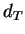

Next: Input and output parameters
Up: Parameters
Previous: Parameters
Contents
Algorithmic parameters
A number of the adjustable parameters control the way in which FISH finds
blocks. Altering these parameters can substantially influence the results.
- MIN_BLOCK_SIZE
- The minimum number of points needed to define a homologous block.
- TOP_HITS
- Matches that are not in among the TOP_HITS scoring matches for either
component feature will be discarded.
- MAX_DIST
- The maximum number of intervening markers allowed between markers in t
he same detandemized feature.
- T
- The probability of having one or more neighbors within a distance
less than or equal to than  under the assumption that each cell contains
a point with probability
 . Values of
. Values of  closer to zero will result in blocks with more
closely spaced points. This is roughly analogous to the gap parameter in local sequence alignment.
closer to zero will result in blocks with more
closely spaced points. This is roughly analogous to the gap parameter in local sequence alignment.
- MIN_SCORE
- Matches with scores less than MIN_SCORE will not
be considered by FISH despite being listed in a match file.
- AVG_SCORE
- This option enforces symmetry between two matches
(e.g. 1 versus 2 and 2 versus 1) by taking an
average of the scores. If this averge is less than the MIN_SCORE, the
match will be discarded.
The default behavior is to choose the larger of the two scores.
- DETANDEMIZE
- This allows the user to turn detandemization off.
Next: Input and output parameters
Up: Parameters
Previous: Parameters
Contents
root
2003-06-27